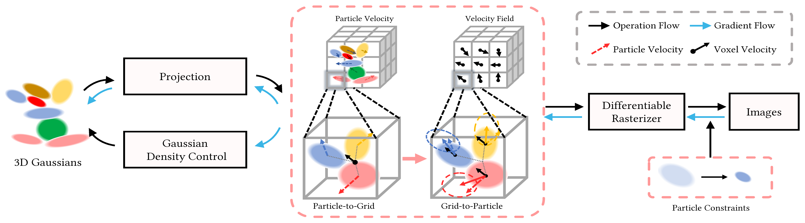
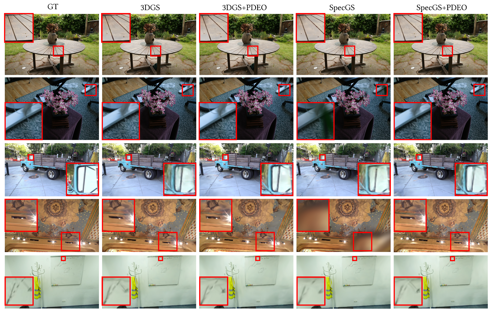
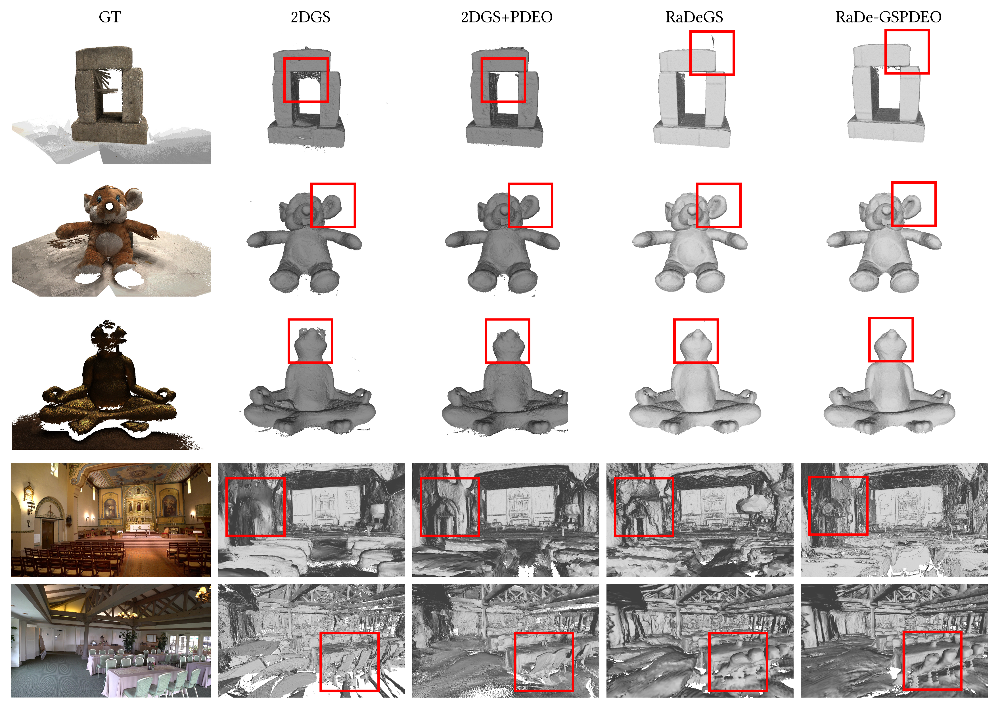

3D Gaussian Splatting (3DGS) has revolutionized radiance field reconstruction but encounters blurring and floaters in complex scenes due to unstable optimization of small Gaussians. We attribute this to the imbalance in gradient magnitudes during optimization.
To address this, we present PDEO, a novel, plug-and-play optimization framework. We theoretically derive that 3DGS optimization can be modeled as a Partial Differential Equation (PDE) and introduce a viscous term inspired by fluid simulation to ensure stable optimization. By employing the Material Point Method (MPM), we obtain a stable numerical solution that enhances both global and local constraints. Extensive experiments confirm that PDEO achieves state-of-the-art rendering and reconstruction quality across various datasets.
Our core insight is that the instability in 3DGS optimization arises because positional gradients dominate other attribute gradients when Gaussian scales are small.
Key Contributions:

PDEO consistently improves PSNR, SSIM, and LPIPS across Mip-NeRF360, Tanks&Temples, and ScanNet++ datasets.

PDEO also excels in surface reconstruction tasks, achieving lower Chamfer Distance errors on the DTU dataset and higher F1-scores on Tanks&Temples.

If you find our work useful, please consider citing:
@inproceedings{mo2026pdeo,
title={Plug-and-Play PDE Optimization for 3D Gaussian Splatting: Toward High-Quality Rendering and Reconstruction},
author={Mo, Yifan and Cai, Youcheng and Liu, Ligang},
booktitle={IEEE/CVF Conference on Computer Vision and Pattern Recognition (CVPR)},
year={2026}
}